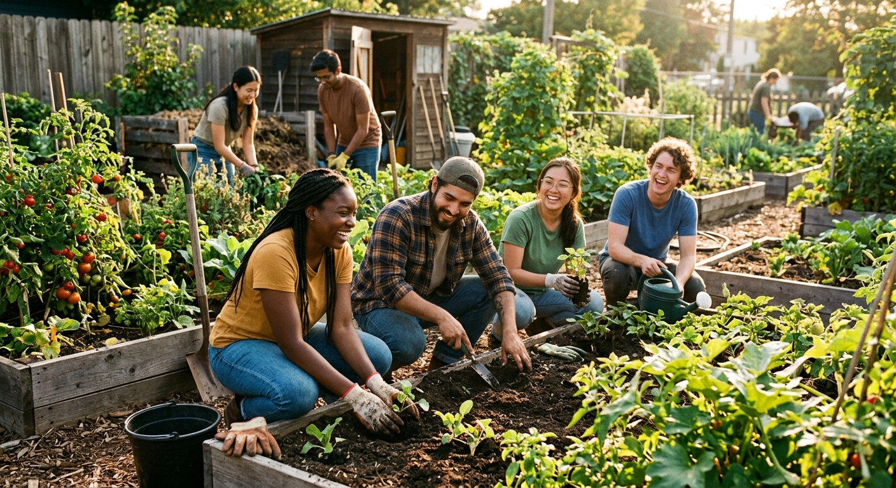
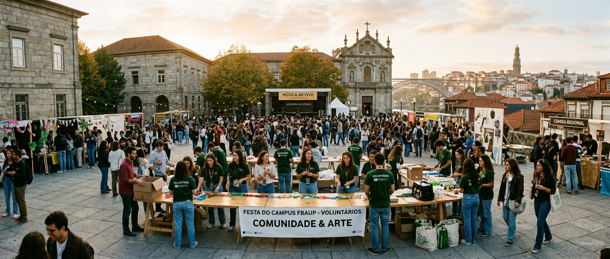
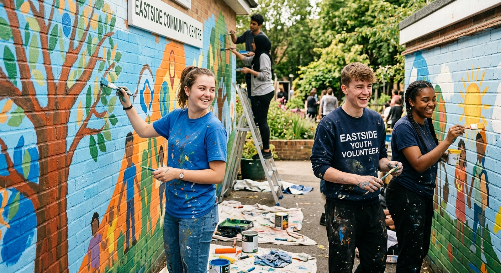
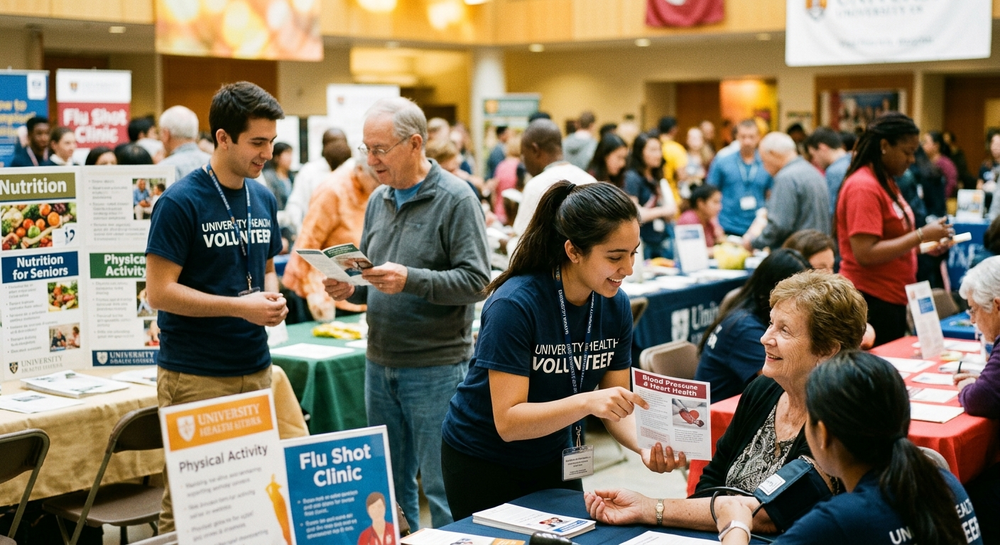
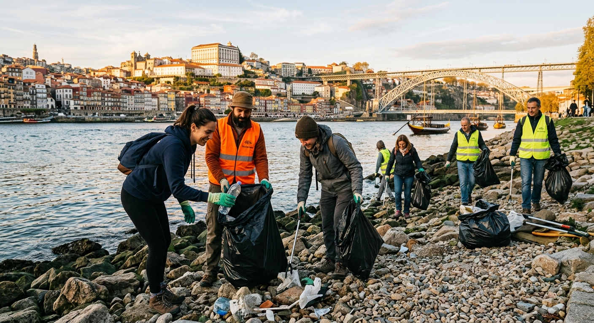
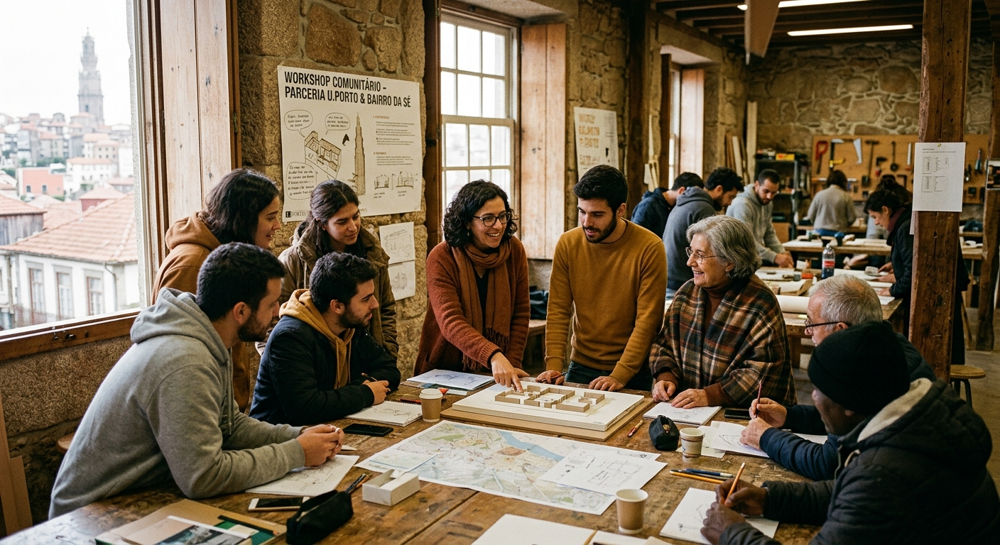
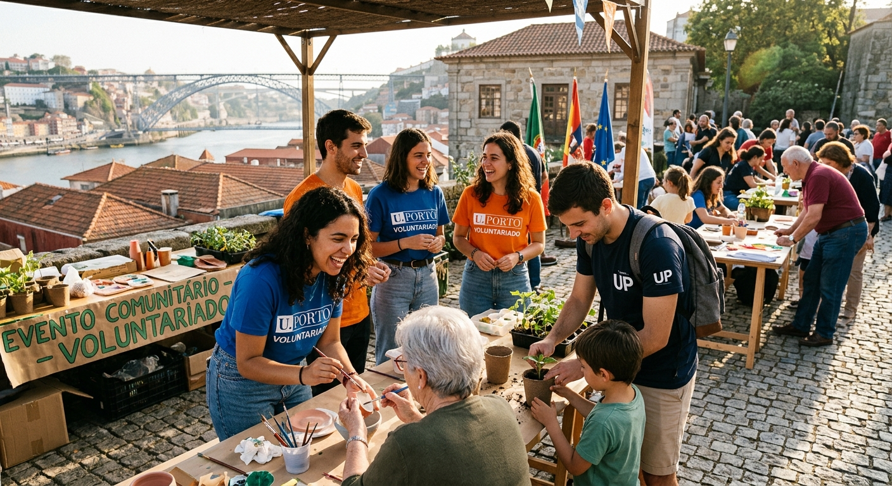
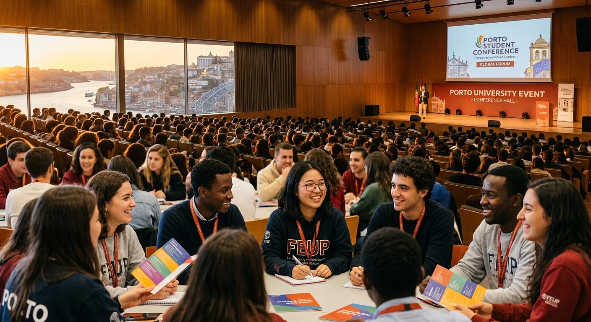
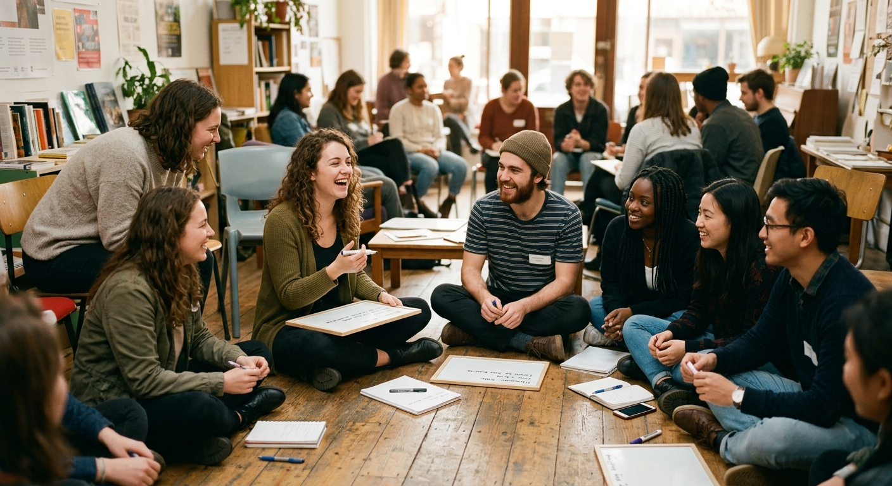

Design Inclusivo
Sala 2.01 · 14:00–16:00
Guia visual da biblioteca de componentes da Semana Solidária. Cada bloco apresenta o componente isolado para revisão; a composição em páginas vem em fase seguinte.
Tokens de cor e escala tipográfica.
Botão em pílula. Versão primária com fundo dourado, secundária com contorno castanho.
Linha discreta para dados ainda por confirmar.
Informação em atualização.
Rótulo curto em maiúsculas com tracking. Variante simples para overlines; sólida para chips de categoria.
Cabeçalho de secção (título + subtítulo).
Atividades confirmadas
Entidades que apoiam a iniciativa
Contagem decrescente para a abertura. Atualizada por countdown.js via data-event-date.
Célula de parceiro. O alt deve ser o nome da entidade, não "logo de…".
Cartão com chip de categoria, título e descrição. Variante --media acrescenta uma imagem no topo.
Sala 2.01 · 14:00–16:00
Reitoria · 10:00–13:00
.card--media)Sala 2.01 · 14:00–16:00

Praça Gomes Teixeira · todo o dia
Capa de vídeo com link para o player externo. Sem reprodução inline.

Faixa decorativa de fotografias da edição anterior. Marcada como apresentacional para leitores de ecrã.



Bloco lado-a-lado em desktop, empilhado em mobile.

Descubra como o voluntariado transforma comunidades e vidas durante a Semana Solidária.
Saber MaisGrelha de parceiros sobre fundo creme.
Cabeçalho compacto em fundo creme alternativo — usado em páginas internas.
21–26 de setembro 2026
Hero da página inicial com gradiente dourado, contagem decrescente e dois botões.
Semana da Cidadania, Voluntariado e Responsabilidade Social
Variante com imagem de fundo, sobreposição escura e texto invertido. O contraste do texto sobre a imagem deve manter-se ≥ 4.5:1.

Semana da Cidadania, Voluntariado e Responsabilidade Social
Banner curto para páginas internas — mesma estrutura do .hero--image, mas com .hero--compact para reduzir a altura e o tamanho do título. Sem contagem decrescente nem botões.

21 a 26 de setembro 2026
Programa por horas. Lista ordenada com <time> em cada linha. Variante --gold para usar pontos dourados, opcional thumbnail por linha.
Reitoria da U.Porto · Salão Nobre
Inclusão e Responsabilidade Social
Faculdade de Psicologia · Sala B104
.timeline--gold + .timeline__thumb)Reitoria da U.Porto · Salão Nobre
Inclusão e Responsabilidade Social
Faculdade de Psicologia · Sala B104

Cartão clicável com imagem de fundo e gradiente que ancora o texto na parte inferior. Útil para chamadas-à-ação visualmente fortes (inscrever, voluntariar, contactar).
Social Callout
Convite para partilha nas redes sociais. Variante escura para destacar entre secções creme; variante creme para uso contínuo no mesmo tom.
Variante escura (
.social-callout--dark)Partilhe nas redes sociais
#VoluntariadoUPorto
Junte-se ao movimento. Partilhe a sua experiência e inspire outros a fazer parte da Semana Solidária.
Partilhar nas Redes
Links para redes sociais em atualização.
Variante creme (
.social-callout--cream)Partilhe nas redes sociais
#VoluntariadoUPorto
Junte-se ao movimento. Partilhe a sua experiência e inspire outros a fazer parte da Semana Solidária.
Partilhar nas Redes
Links para redes sociais em atualização.